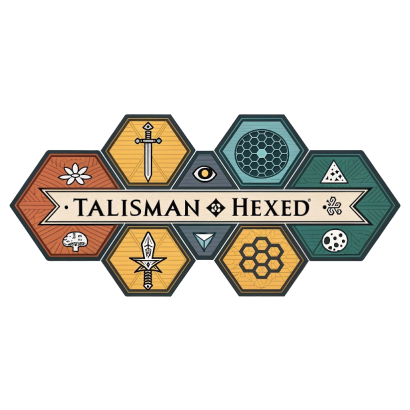

Have you ever tried to embed a chess game on a website? If you have, you probably reached for one of the established libraries: Chessboard.js, chess.js, Lichess's board component. They work. But what if you wanted Atomic Chess? Or Racing Kings? Or a variant where pieces can clone themselves? Suddenly you're forking entire codebases and fighting against architectures designed for one game.
That frustration is what led me to build Moddable Chess Engine, a modular engine that treats variants as first-class citizens. And once I had the architecture patterns right, the same thinking produced Moddable Hexmaps, a framework where any hex-based board game can be generated, edited, and shared with a URL.
Both shipped to production in 16 days. Both are MIT-licensed. And both were built almost entirely using AI-augmented engineering workflows.

The Chess Engine: From 70 Variants to Consumer Game SDK
The Moddable Chess Engine started as a variant-first chess app: 70 playable variants on boards from 4x8 to 12x8, multi-depth AI with Web Worker threading, opening books, and variant-aware evaluation. Pure JavaScript, no dependencies, embeddable with a single iframe tag.
But the interesting evolution happened next. The engine grew a consumer SDK (v0.7.1): renderer extension hooks, a reusable game controller, replay API, unit templates, terrain predicates, and effect lifecycle hooks. These aren't chess-specific. They're the primitives for building any turn-based game on top of MCE's move engine and AI.
The proof is Dungeon Chess, an asymmetric skirmish game with 4 fantasy factions, dungeon terrain, water hazards, and XP-budgeted unit drafting. It runs entirely on MCE's consumer APIs. Custom tilePainter renders dungeon walls. Custom pieceProvider renders fantasy units. The game controller handles multi-faction turns. Zero engine forks. The chess engine became a game framework.
This is a DevRel problem as much as an engineering one. The question evolved from "can someone add a variant without understanding the engine?" to "can someone build a completely different game without forking?" That meant investing in consumer-facing APIs, integration guides, and architecture that separates rendering, rules, and game loop.
- 70 playable variants — from Atomic Chess to Medusa Chess
- Consumer SDK (v0.7.1) — createGameController(), createReplay(), renderer hooks, unit templates, effect lifecycle hooks
- 2 games powered — chess variants + Dungeon Chess on the same core
- AI with opening books — Web Worker search, 26 variant-specific books, multiple difficulty levels
- Developer guides — Build a Variant, Crazyhouse, Poison Chess, Building Dungeon Chess (consumer integration)

The Hex Map Framework: Infinite Seeded Worlds
Moddable Hexmaps solves a different problem: board game designers need maps, but designing them manually is tedious and sharing them is friction-heavy. What if every map had a URL? And what if that URL could be deterministically regenerated from a seed string?
The framework generates hex grids via Canvas (flat-top or pointy-top, at any ring count). It uses seeded RNG so the same seed always produces the same map. Multiple terrain palettes support different games (Nukes gets volcanic landscapes, Talisman gets fantasy biomes). Maps export to JSON. Maps import from JSON. Maps embed in iframes. Everything is controlled via URL parameters.
This means sharing a map is sharing a URL. Reproducibility is guaranteed by the seed. And because everything renders client-side, there's no server cost regardless of how many maps people generate.
- Seeded procedural generation — same seed = same map, always
- 4 games supported — Nukes, Talisman, Twilight Imperium, Colony
- URL parameter API —
?theme=nukes&rings=4&seed=volcano - Click-to-edit — manual overrides on any generated hex
- JSON export/import — save, share, and reload board states
The Architecture That Made It Possible
The reason this shipped in 16 days isn't velocity alone. It's that every architectural decision compounds. The variant plugin interface means adding a new chess variant is a single file. The seeded RNG means sharing a map is sharing a URL. The renderer hook system means Dungeon Chess didn't fork the engine. The postMessage API means any embed is controllable at runtime without rebuilding the iframe.
Each decision removes future work. A plugin system that requires a fork isn't a plugin system. An embed that requires redeployment to change isn't embeddable. A game framework that can only make chess isn't a framework. The 16-day timeline is a consequence of getting these decisions right early, not of typing faster.
The full ecosystem: four games (Nukes, Mongo, Endless Skies, Dungeon Chess), two engines (chess + hexmaps), nine mods, a 190-page rulebook pipeline, investor presentations, and a documentation site. All MIT-licensed, all statically hosted, all zero dependencies.
Try Them
Both engines are live, MIT-licensed, and waiting for someone to build something weird with them.
- chess.moddable.games — play any of the 70 variants right now
- hex.moddable.games — generate a map, grab the seed, share the URL
- github.com/Moddable-Games — everything is open source